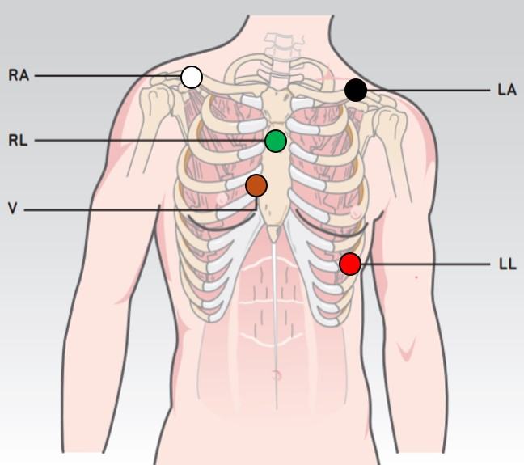

LEAD PLACEMENT FOR H3+ HOLTER RECORDER

- Attach cable lead wires to the electrodes before applying them to the patient.
- Insert AAA battery into battery compartment.
- Place the RA electrode on or just below the right clavicle.
- Place the LA electrode on or just below the left clavicle.
- Place the RL electrode in a stable location such as the upper third of the sternum.
- Place the LL electrode on the lower left edge of the rib cage.
- Place the V1 electrode on the patient’s 4th intercostal space to the right of the sternum.
- Press the black rubber button on the recorder to cycle through the recorder menu. First, the current time will be displayed. Continue to press the button until it brings you back to display the current time.
- Press and hold the button until a capital letter “R” displays on the left side of the screen.
- Success! The monitor is now recording.